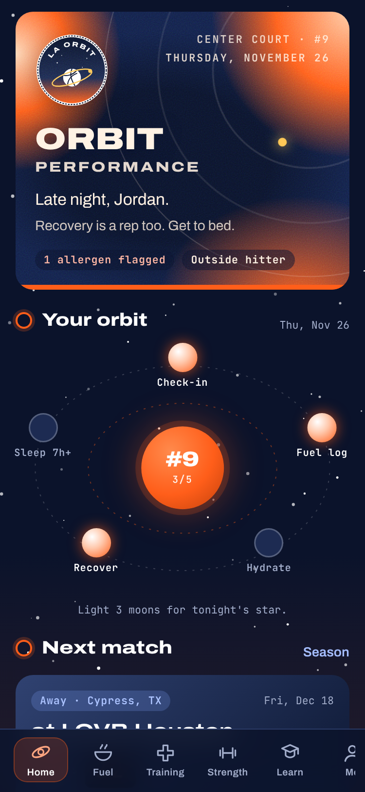
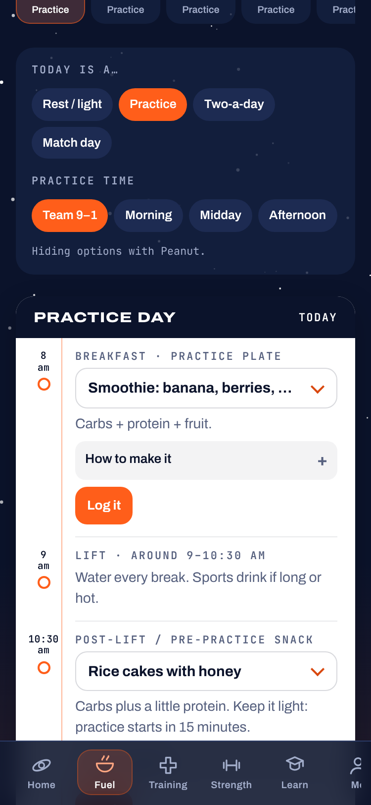

Open npadu22.github.io/LOVB-LA. No App Store, no account, no password.

Tap a moon on Home to do it. Light 3 or more for tonight's star; seven stars complete the week's constellation.
Every morning, 15 seconds: sleep, soreness, energy, mood, stress, plus what helped you recover yesterday.
Log at least one meal. From your meal plan it's one tap: Log it.
Set your bottle size once, tap +1 bottle each time you finish one. The moon lights at your daily ounce goal.
Tap what you did: sleep, nap, recovery meal, ice, cold tub, stretch, treatment, and more.
Tap once you've slept 7 or more hours.
Pins for streaks and milestones show up in Me. There are twelve to collect, from Kill for a lift PR to Pancake for 8+ hours of sleep. Every Monday, Home shows a Last week summary.

Team programs, programs for your position, and any program Emma posts just for you.
Tap Day 1, Day 2… at the top of a program. Exercises are grouped Pre-practice, Practice and Post-practice.
Tap Mark done on each exercise. Watch demo opens a video when Emma adds one. Your code is shown under Your programs.
From Emma shows her latest updates. Check it before practice and road trips.
Open the Strength tab and tap Lift 1–4 or Conditioning. Caíque Bothelo sets the exercises for your position; Watch demo shows the movement.
Enter weight × reps and tap Log set. It shows what you lifted last time. Tap Finish when you're done; conditioning asks how hard it was (RPE 1–10) and how long.
Your progress charts each lift across the season with best weight, estimated 1RM and % change. Beat your best and you'll see a PR stamp.
Home › More › Hydration. Choose your bottle size (16–40 oz) and a daily goal. Starting point: about 80 oz, more on hot, long or two-practice days.
Log what you did today or yesterday. After about a week of logging and morning check-ins, What works for you shows which habits come before your best mornings.
Home › More › Cycle. Log flow and symptoms; it shows your cycle day and estimates your next period. Private: it stays on your phone, and you can delete it any time.
Learn › Ask the RD: type any question for answers your dietitian has reviewed, each with its source. Not there? One tap sends it to your dietitian. Library has short lessons; Tools has your plates and the supplement check (USADA-recommended certifications only).
Me has your profile card (with eating style), pin collection, color schemes, backgrounds, the game-day theme, larger text, your language and what's shared with staff. Meals marked ★ were picked for you by your dietitian.
Check-ins, meals, water, lifts and conditioning go automatically to a private sheet only your dietitian, athletic trainer and strength coach can open. Your cycle tracker, notes, photos and allergies stay on your phone.
Pain, swelling, a hit to the head or anything that worries you: see Emma the same day. A missed period for 3+ months, constant fatigue or a supplement question: talk to your dietitian.
Install · sign up · first check-in (earns First Touch) · log a meal · open Training
Something broken or missing? Home › More › App feedback sends a note to your dietitian.